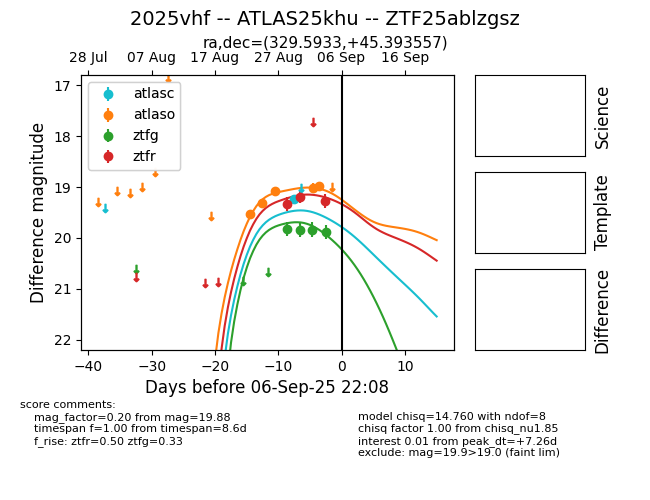

FINK: ZTF25ablzgsz
Lasair: ZTF25ablzgsz
ALeRCE: ZTF25ablzgsz
TNS: 2025vhf
YSE: 2025vhf
ZTF25ablzgsz (ztf,fink)
2025vhf (tns,yse)
ATLAS25khu (atlas)
equatorial (ra, dec) = (329.5933,+45.39356)
galactic (l, b) = (93.8899,-7.49616)

last atlasc=19.24, atlaso=19.44, ztfg=19.88, ztfr=19.82
1 atlasc, 7 atlaso, 4 ztfg, 4 ztfr detections